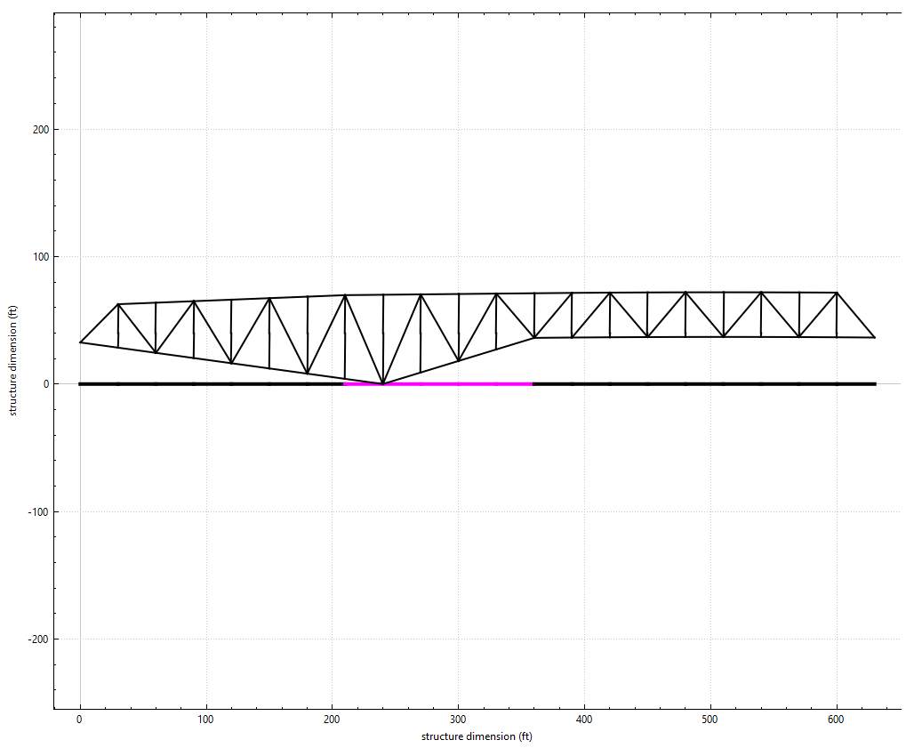
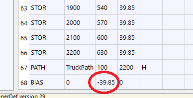
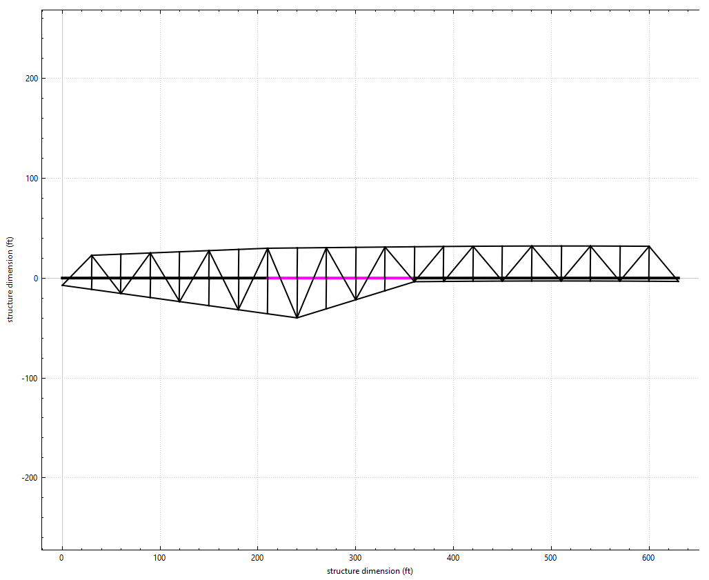

COGO Command: BIAS
This version of Steel BRIDG requires that the truck path be at Y=0. Some older BDF files that were translated from the older 3D program use a Y coordinate that is not 0. So that all the data need not be re-entered and re-calculated, a bias can be applied to the input data.
Command is:
Command |
X-bias |
Y-bias |
Z-bias () |
|---|---|---|---|
BIAS |
0 |
39.85 |
0 |
In the following example if this bridge, 305-10, which was converted from an older version of BRIDG, does not use the bias command, and has set the truck (stringers) at Y=39.85 feet, the program gets very confused and will not calculate the truck path correctly.

Adding the BIAS command:

